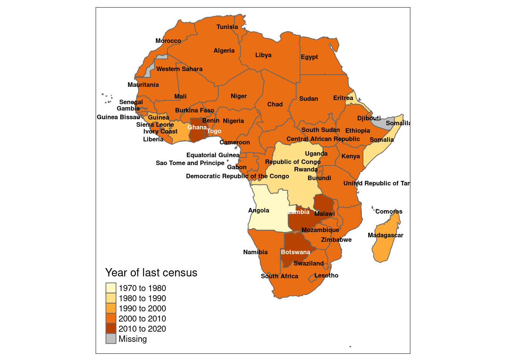

Chapter 5 Visualising spatial data part 1: sf, mapview, tmap
In this section we use tmap, sf and mapview packages to visualise spatial data. In particular this section focuses on:
- Creating static maps
- Add layers to the maps
- Creating interactive maps
Hint: In order to work properly a list requires an empty line beforehand.
5.1 Static maps
5.1.1 Basics (this step can be removed if the basic steps can be put in ch.3 ‘R recap’, since they repeat for all packages)
Set up the working directory with the command setwd("path to your directory") or with the openProject function as follows (recommended):
Install required packages
cran_packages_to_install <- c(
"tmap" # map-making package
"tidyverse", # metapackage containing dplyr, ggplot2 and other packages
"sf", # package for working with spatial data
"rnaturalearth", # data package
"rnaturalearthdata" # data package
)
install.packages(cran_packages_to_install)Load the packages
library(tmap)
library(ggplot2)
library(sf)
library(rnaturalearth)
library(rnaturalearthdata)
library(dplyr)Create a dataset
Create an empty contour map of the continent

5.2 Layers for the static maps
Fill map using data on last census data and add labels for country names
5.3 Interactive maps
Mapview package allows for an interactive viewing of spatial objects in R.
Install mapview package
Load package
Basics